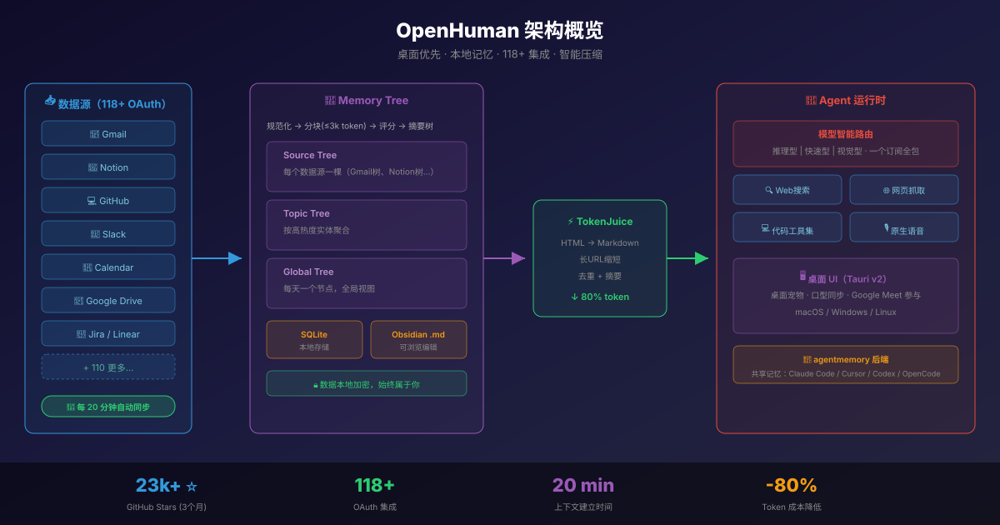

OpenHuman 深度评测：3个月28.6k Star，这个桌面AI助手凭什么火爆全网？ - AI知识宇宙
一、2026 年 AI Agent 三国杀：新玩家入场
2026 年的 AI Agent 赛道已经卷成了红海：
- OpenClaw：373k Star，多平台网关之王，插件生态最丰富
- Hermes Agent：157k Star，自学习技能系统，越用越聪明
- OpenHuman：28.6k Star（3个月），桌面优先，分钟级上下文建立
前两位是终端派——你得会敲命令、配 YAML、管 API Key。而 OpenHuman 的创始人 Steven Enamakel 说了一句话，直接定义了这个项目的方向：
"我试着帮我爸装一个开源 AI Agent，折腾了三小时的 API Key、YAML 和终端，最后我们俩都放弃了。OpenHuman 就是从那次失败里长出来的。"

二、OpenHuman 是什么？
一句话：一个开源的桌面 AI 超级助手，连接你的所有工具，20 分钟内自动建立完整上下文，本地存储记忆。
| 维度 | 信息 |
|---|---|
| 开发者 | TinyHumans AI |
| GitHub | tinyhumansai/openhuman |
| Stars | 28,600+（2026年2月发布） |
| 技术栈 | Rust 65% + TypeScript/React 19 + Tauri v2 |
| 许可证 | GNU GPL-3.0 |
| 平台 | macOS / Windows / Linux（桌面应用） |
| 当前版本 | v0.54.0 |
三、核心特性深度解析
3.1 几分钟建立上下文，而非数周
这是 OpenHuman 最核心的差异化。
大多数 Agent 的问题是冷启动： - Hermes Agent 需要你持续使用，通过"技能系统"慢慢积累 - OpenClaw 需要你手动安装插件、配置数据源
OpenHuman 的做法是：连接账号 → 自动拉取 → 压缩存储 → 立即可用。
连接 Gmail/Notion/GitHub/Slack（一键 OAuth）
↓
每 20 分钟自动同步新数据到本地
↓
Memory Tree 将数据压缩为 ≤3k token 的 Markdown 片段
↓
存入本地 SQLite + Obsidian 兼容的 .md 文件
↓
Agent 拥有你的完整上下文（收件箱、日历、代码库、文档、消息）
灵感来源于 Andrej Karpathy 的 LLM 知识库 理念——用结构化的 Markdown 文件作为 AI 的长期记忆。
3.2 Memory Tree + Obsidian Wiki
记忆系统是 OpenHuman 的脊柱。它不是简单的向量数据库检索，而是一个确定性的、分桶密封的管道：
数据源适配器 → 规范化 → 分块器 → 内容存储 → 评分 → 摘要树 → 检索
三层摘要树： - Source Tree：每个数据源一棵树（Gmail 一棵、Notion 一棵...） - Topic Tree：按高热度实体聚合 - Global Tree：每天一个节点，全局视图
所有数据最终落地为 .md 文件，你可以直接用 Obsidian 打开、浏览、编辑。这意味着：
- 你能看到 AI 记住了什么
- 你能手动修正错误的记忆
- 你能导出带走，不被锁定
3.3 118+ 第三方集成
通过 Composio 连接器层实现一键 OAuth：
| 类别 | 支持的服务 |
|---|---|
| 邮件 | Gmail、Outlook |
| 协作 | Notion、Slack、Discord、飞书 |
| 代码 | GitHub、GitLab、Linear、Jira |
| 日历 | Google Calendar、Outlook Calendar |
| 存储 | Google Drive、Dropbox |
| 支付 | Stripe |
| 更多 | 118+ 服务... |
每个连接都以类型化工具的形式暴露给 Agent，不需要写任何代码。
3.4 TokenJuice 智能压缩
每个工具调用、抓取结果、邮件正文在送入 LLM 之前，都经过压缩层处理：
- HTML → Markdown 转换
- 长 URL 缩短
- 冗余工具输出去重和摘要
- 中文、emoji 等多字节字符按字形完整保留，绝不丢弃
效果：相同信息，token 消耗降低最多 80%。这直接意味着更低的 API 成本和更快的响应速度。
3.5 桌面宠物 + 原生语音
OpenHuman 有一个桌面吉祥物（mascot），它能： - 说话（ElevenLabs TTS 输出） - 感知周围环境 - 作为真实参与者加入 Google Meet 会议 - 口型同步 - 即使你停止输入，仍在后台持续思考
这不是噱头——对于非技术用户来说，一个"有脸"的 AI 助手比黑色终端窗口友好太多了。
四、5 分钟上手教程
macOS（推荐 Homebrew）
brew tap tinyhumansai/openhuman
brew install openhuman
Windows
从 GitHub Releases 下载 .msi 安装包，双击安装。
或 PowerShell 一键安装：
irm https://raw.githubusercontent.com/tinyhumansai/openhuman/main/scripts/install.ps1 | iex
Linux（Debian/Ubuntu）
sudo apt-get install -y gnupg2 curl ca-certificates
curl -fsSL https://tinyhumansai.github.io/openhuman/apt/KEY.gpg \
| sudo gpg --dearmor -o /etc/apt/keyrings/openhuman.gpg
echo "deb [signed-by=/etc/apt/keyrings/openhuman.gpg arch=amd64] \
https://tinyhumansai.github.io/openhuman/apt stable main" \
| sudo tee /etc/apt/sources.list.d/openhuman.list
sudo apt-get update && sudo apt-get install -y openhuman
安装后
- 打开 OpenHuman 桌面应用
- 注册/登录账号
- 点击「Integrations」→ 一键连接 Gmail、Notion、GitHub 等
- 等待 20 分钟首次同步完成
- 开始对话——Agent 已经了解你了
五、与 Hermes Agent、OpenClaw 三方对比
以下对比基于 OpenHuman 官方文档（产品持续演进，请以各厂商最新情况为准）：
| 维度 | OpenClaw | Hermes Agent | OpenHuman |
|---|---|---|---|
| 开源 | ✅ MIT | ✅ MIT | ✅ GNU GPL-3.0 |
| 易上手 | ⚠️ 终端优先 | ⚠️ 终端优先 | ✅ 清爽 UI，几分钟上手 |
| 成本 | ⚠️ 自带模型 | ⚠️ 自带模型 | ✅ 单一订阅 + TokenJuice 省钱 |
| 记忆 | ⚠️ 依赖插件 | ✅ 自学习技能 | 🚀 记忆树 + Obsidian 仓库 |
| 集成 | ⚠️ 自行接入 | ⚠️ 自行接入 | 🚀 118+ 通过 OAuth |
| 自动拉取 | 🚫 无 | 🚫 无 | ✅ 20 分钟同步到记忆 |
| API 碎片化 | 🚫 自带密钥 | 🚫 多供应商 | ✅ 一个账户搞定 |
| 模型路由 | ⚠️ 手动 | ⚠️ 手动 | ✅ 内置智能路由 |
| 原生工具 | ✅ 仅代码 | ✅ 仅代码 | ✅ 代码 + 搜索 + 抓取 + 语音 |
怎么选？
- 你是开发者，想要一个在服务器上长期运行、越用越聪明的 Agent → Hermes Agent
- 你是开发者，需要多平台网关和丰富的插件生态 → OpenClaw
- 你是非技术用户，或者想要最快的上手体验和最丰富的集成 → OpenHuman
- 你极度重视隐私，想要数据完全本地化 → OpenHuman（Memory Tree 本地存储）
六、实际使用场景
场景一：每日工作摘要
连接 Gmail + Slack + Calendar 后，每天早上问一句：
"总结一下昨天我收到的重要邮件、Slack 消息和今天的日程安排"
Agent 已经有完整上下文，直接给出结构化摘要。
场景二：跨工具信息检索
"上周 @张三 在 Slack 里提到的那个 API 设计方案，帮我找出来，顺便看看他在 Notion 里有没有写相关文档"
Memory Tree 跨数据源检索，一次性给出所有相关信息。
场景三：代码 + 文档联动
连接 GitHub 后：
"看看我的 PR #42 的 review 意见，帮我写一个修复方案，然后更新 Notion 里的技术文档"
Agent 能读 PR、写代码、更新文档，一条龙完成。
场景四：会议助手
OpenHuman 可以作为真实参与者加入 Google Meet： - 实时记录会议内容 - 会后自动生成摘要 - 将 action items 同步到你的任务管理工具
七、局限性与注意事项
⚠️ 需要注意的点
- 仍在 Early Beta — 官方明确标注"可能存在不完善之处"，生产环境慎用
- GPL-3.0 协议 — 比 MIT 更严格，商业使用需注意合规
- 依赖托管后端 — 默认的模型路由、OAuth 代理、搜索代理走 OpenHuman 服务器，不是完全本地
- 无移动端 — 目前只有桌面应用，没有手机版
- 订阅制 — 虽然开源，但完整功能需要付费订阅（模型路由等）
- Wayland 兼容问题 — Linux 下 AppImage 在 Wayland 环境可能崩溃
✅ 适合的场景
- 个人效率提升（跨工具自动同步）
- 知识管理（Obsidian 用户天然适配）
- 非技术用户想体验 AI Agent
- 重视隐私的用户（数据本地存储）
- 开发者想要一个"开箱即用"的 Agent 框架
八、与 agentmemory 的互操作
如果你已经在用 Claude Code、Cursor、Codex 等编码 Agent，OpenHuman 提供了一个 agentmemory 后端——在 config.toml 中设置：
[memory]
backend = "agentmemory"
这样同一个持久化记忆存储可以同时服务于 OpenHuman 和你的其他编码工具，实现跨 Agent 的记忆共享。
九、总结
OpenHuman 的核心赌注是：结构化的本地记忆 > 向量检索，自动同步 > 手动喂数据，GUI > 终端。
它不是要取代 Hermes 或 OpenClaw——三者面向不同的用户群体。但对于那些"想用 AI Agent 但被终端和配置劝退"的 99.99% 的人来说，OpenHuman 可能是 2026 年最值得尝试的入口。
3 个月 28.6k Star、Product Hunt 日/周/月三榜第一、GitHub Trending 连续 7 天 #1——市场已经投票了。
参考资料
-
TinyHumans AI. (2026). OpenHuman: Your Personal AI Super Intelligence. GitHub | 官方文档
-
Alpha Signal. (2026). How OpenHuman Works, And How to Set It Up in 5 Minutes. Substack
-
TechTimes. (2026). OpenHuman Tops GitHub Trending by Inverting the Playbook. 文章链接
-
Product Hunt. (2026). OpenHuman — An open source AI harness built with the human in mind. Product Hunt
-
Knightli. (2026). The Desktop Route for an Open-Source Personal AI Agent. 文章链接
-
Medium. (2026). How To Use OpenHuman for Personal AI Productivity. 文章链接
🛒 相关硬件推荐
OpenHuman 是桌面应用，流畅运行需要一台性能不错的电脑：
京东精选
| 商品推荐 | 推荐理由 | 参考价 |
|---|---|---|
| 宏碁掠夺者 512G SSD M.2 NVMe | 本地记忆存储快速读写 | ¥669 |
| 华硕 27英寸 2K 240Hz 显示器 | 桌面 Agent 大屏体验 | ¥1,369 |
| Bose QC消噪耳机Ultra | 语音交互 + Google Meet 降噪 | ¥1,943 |
淘宝优选
| 商品推荐 | 推荐理由 | 参考价 |
|---|---|---|
| 联想拯救者 Y9000P 2026 | 高性能笔记本，Rust 编译+AI 推理流畅 | ¥9,000-12,000 |
| Dell U2723QE 4K显示器 | USB-C 一线连，桌面 Agent 大屏 | ¥3,000-4,000 |
| 三星 T7 Shield 2TB 移动SSD | Memory Tree 数据备份随身带 | ¥1,000-1,400 |
本文基于 OpenHuman v0.54.0 及官方文档编写。项目仍在 Early Beta 阶段，功能可能快速迭代，建议关注 GitHub 仓库 获取最新动态。
推荐搭配装备
善其事，利其器。以下硬件能最大化你的AI体验👇
🔗 通过以上链接购买可支持本站持续运营 🙏